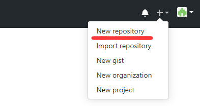
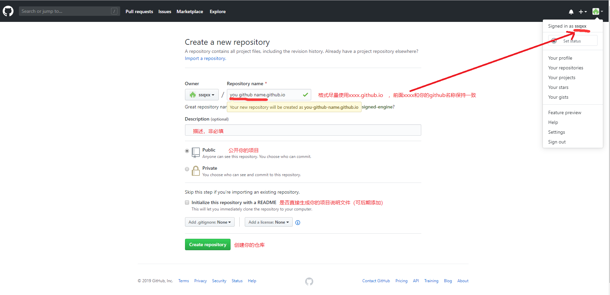
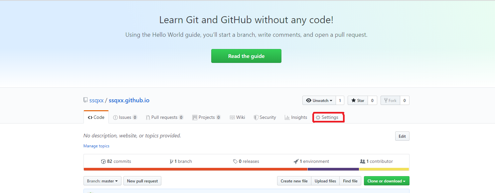
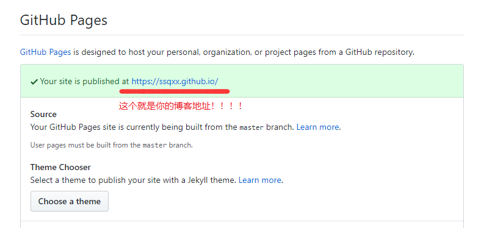
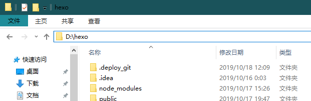
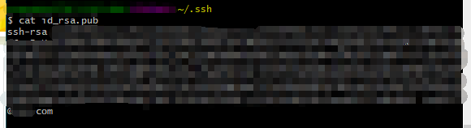
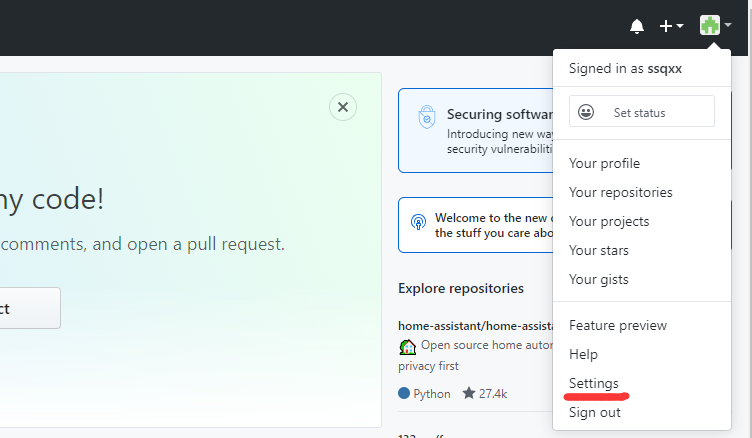
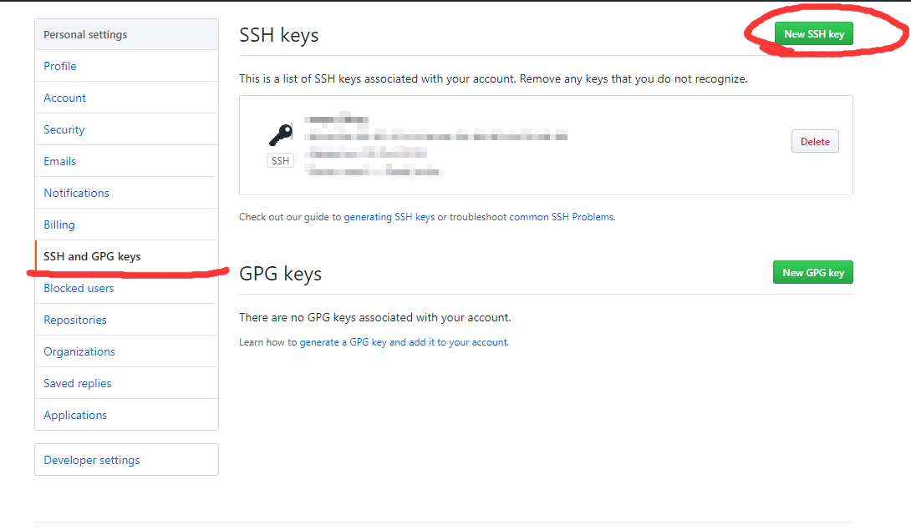
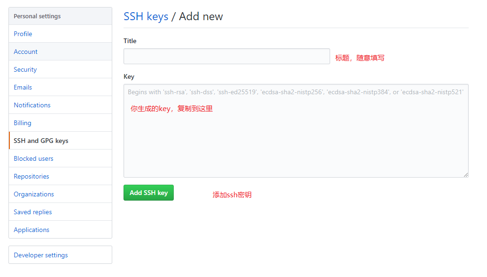
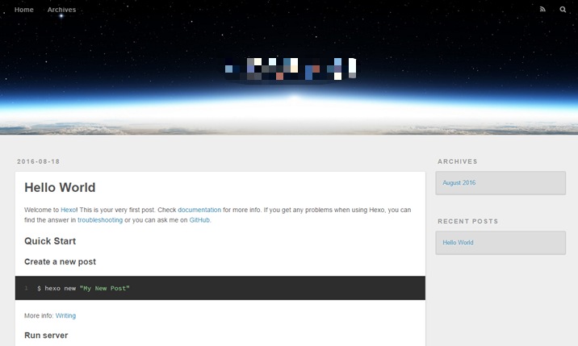

现在我来记录一下我创建这个博客的过程……
一：简介
使用github来搭建个人博客
当然要先简单了解github page
虽然官方推荐使用 Jekyll+github 的方式来创建网页，但我选择使用 Hexo+github 来搭建自己的博客网站，现在来记录一下我的搭建过程！
1：环境搭建—nodejs，git
首先得进行环境搭建
①nodejs安装：nodejs 就是搭建博客前端的基础
②git安装：git 是搭建博客与 github 的连接
最后介绍我搭建的电脑环境：
- Win10
- node@v10.16.0
- npm@6.9.0
- git@2.23.0
2：准备 github 账号
① 没有 github 账号：进入github官网进行注册（教程）
② 有 github 账号：直接登录进入你的github
三：搭建 github 博客
1：在 Github 创建仓库
登录进你的 github
首页右上角头像那里有一个“+”号，点击后选择“New repositor”。

进入到仓库创建页面

创建完之后点击“Settings”

往下拉找到 GitHub Pages，查看你的博客地址，仓库创建完成！

2：搭建 Hexo
目前支持 Markdown 的博客工具中，我知道的比较火的有 Jekyll 和 Hexo。
Jekyll 流行是因为官方推荐使用，配合 Github 开发可定制程度非常高。
Hexo 则胜在依赖较少只需要安装 node 就够了（没错，是我太懒，另一个原因是我的伙伴也都用 hexo）。
那就敲定了我的博客是 hexo+github 来搭建！
1：安装Hexo
先找好一个你要创建 hexo 文件的地方，例如：

（好吧！我就直接在我的 D 盘新建了一个 hexo 的文件夹就将 Hexo 安装进去了）
在安装好 node 之后可以打开 cmd（命令行操作），先进入到你新建的文件夹中，再执行以下命令：
1 | npm install hexo-cli -g |
这些操作完了之后，可以看到 http://localhost:4000，点击进去就可以查看了。关于 Hexo 的语法点击这里。
2：配置 SSH Key
使用 SSH Key 解决本地和服务器连接。
① 本地生成 key
首先进入 cmd，输入以下命令
1 | cd ~/.ssh |

② 将生成的 key 配置到 github
先点击你 github 首页右上角的头像，然后往下找到 settings

点击进入到你的配置页面，找到并打开 SSH and GPS keys，然后点击右边的 new SSH Key

然后添加你在上面生成的 key，从 ssh-rsa……整段复制过来，然后就完成了 key 配置了！

最后再测试一下 key 是否关联成功
1 | ssh -T git@github.com |
3：配置 Hexo 和 git 的连接
打开你创建的 hexo 文件夹，找到里面的_config.yml 文件，使用开发工具打开（我使用的是 InteliJ 的 WebStorm）,配置以下代码
1 | deploy: |
然后再刷新提交你的 Hexo 代码，再 git Bash 里输入以下代码，不报错则说明你的个人博客已经搭建好了！
1 | hexo g #生成 |
四：博客完成
到这里说明你的博客已经搭建完成了！最后来看看我们的成果吧！
1：完成效果
第一次出现的效果一般都为这样啦

2：博客编写
现在我们来写一次博客，（我第一次写博客也是迷糊的很……）
① 创建一个新的文章，创建完之后会在你的文件夹里/source/_post/下生成你创建的 md 文本
1 | hexo new <post> |
② 使用支持Markdown文本编辑工具进行文章编辑（我使用的是 Typora，更方便编辑，当然 webStorm 也可以）
鸣谢支持
额(⊙﹏⊙)！第一次写那么长的博客文章，有很多不懂的地方，效率也挺低的（写了两天……,,ԾㅂԾ,,）
但我相信我能不断提高自己的啦！时不时的来更新我的学习生活，gogogo……